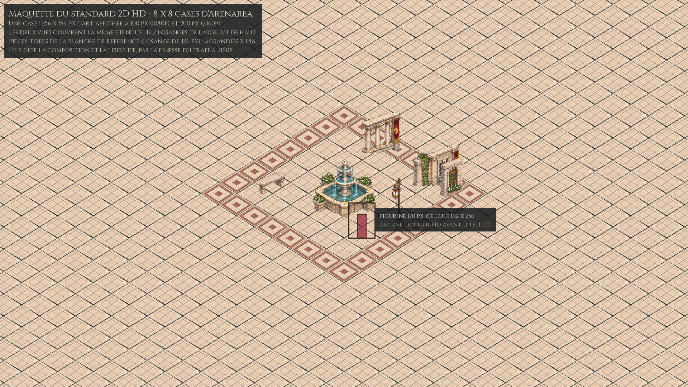
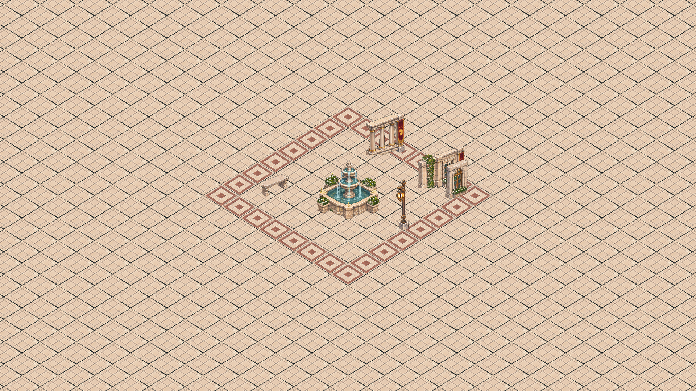
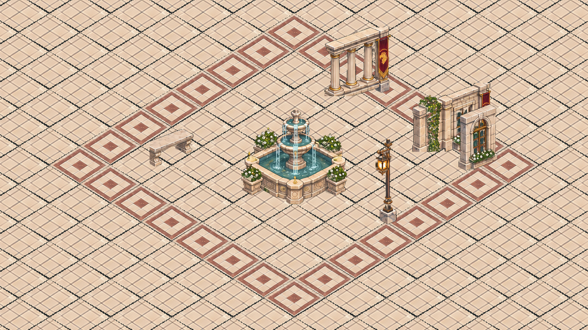

LOT-101 Le standard 2D HD
Le style qui remplace le pixel art est écrit, chiffré et éprouvé sur une maquette rendue dans le moteur.
- État
- livré
- Filière
- Standard et outillage
- Taille
- M
- Ordre calculé
- —
- Prérequis
- LOT-100
- Reprend
- LOT-92 (style de scène), LOT-66 (charte visuelle, pour la scène)
Livrables
standards/style-2d-hd.mdpassé de « proposé » à « normatif », avec ce que la maquette a mesuré.- Une maquette de validation : huit cases sur huit d'Arenarea (sol, deux façades, une colonnade, la fontaine, un lampadaire, un banc), montée à l'échelle du standard et cadrée à 1080p et à 2160p —
maquettes/, montée parscripts/assetsGeneration/build_hd_mockup.py. EX-VIS-008,EX-VIS-009etEX-REN-013réécrites pour la 2D HD.- La consigne de style du générateur en trois blocs :
standards/consigne-2d-hd.md, avec la planche de référence d'Arenarea pour ancre, et son cadrage de planche d'animation.
Critères d'acceptation
- L'auteur approuve la maquette aux deux définitions : lisible à 1080p, nette à 2160p.
- Le standard de la scène ne laisse aucune valeur ouverte ; ce que la figurine garde d'ouvert est nommément porté par un autre lot.
lint_exigences.pyest vert après la réécriture des trois exigences.
Maquettes
{kind=link}

{kind=link}

{kind=link}

Pourquoi
Tout asset produit avant que le standard soit figé risque d'être refait. Ce lot est court, mais il bloque toute la filière des assets : c'est lui qui dit la taille d'une case, la hauteur d'une figurine, la lumière, l'alpha, la palette.
Conception
Les valeurs proposées sont dans le standard : losange de 256 × 159 px, rapport 0,62 conservé, figurine de 170 px dans une cellule de 192 × 256, alpha continu, filtrage bilinéaire avec mipmaps, zoom libre. La maquette sert à les contredire : si une case de 256 px est trop lourde ou trop pauvre, c'est ici qu'on le voit, pas au vingtième quartier.
La maquette se monte à la main dans un outil d'image, à partir de sorties du générateur : elle ne dépend ni du LOT-102 ni du LOT-103. Elle est ensuite la référence de non-régression du rendu HD.
Risques
- La facture « peinte » varie d'une génération à l'autre bien plus que le pixel art quantifié : la consigne doit être éprouvée sur au moins trois familles de pièces avant d'être figée.
- Six ou huit images par animation : l'écart de coût est d'un quart sur chaque PNJ du jeu. Ce risque part avec la question, au LOT-112.
Décisions de réalisation
D-101-1 — La maquette est découpée dans la planche de référence, pas générée. Aucune pièce HD de production n'existe encore, et attendre une génération aurait bloqué le lot qui bloque tout le reste. scripts/assetsGeneration/build_hd_mockup.py découpe les panneaux 01 à 10 de la planche, détoure chaque pièce du fond sombre (alpha continu, couleur redressée), ramène les sols au losange du standard et monte la place. Le montage est reproductible : --check échoue si les images déposées diffèrent de ce que le script produit.
D-101-2 — Ce que la maquette juge, et ce qu'elle ne juge pas. La planche dessine un losange de 136 px là où le standard en demande 256 : les pièces sont agrandies × 1,88. La maquette juge donc la composition, l'emprise et la lisibilité à 100 px de case ; elle ne juge pas la finesse du trait à 2160p, où elle montre la limite de la planche et non celle du standard. C'est écrit dans la planche de repères, pour que personne n'en tire la conclusion inverse.
D-101-3 — La vue de 2160p est déposée en fenêtre, pas en entier. Un cadre 3840 × 2160 pèse 11 Mio, au-delà de la limite de 5 Mio du dépôt (check_binary_files.py), et personne ne le regarde à sa taille. maquette-2d-hd-2160.png est un extrait de 1920 × 1080 au pixel près à la densité 2160p, pris au centre : la finesse est la seule question que 2160p pose, et la fenêtre y répond.
D-101-4 — La frontière d'EX-VIS-009 change de motif, pas de tracé. Elle séparait deux factures (pixel art contre peint) ; les deux couches sont peintes désormais. Elle sépare maintenant deux échelles : une pièce de scène se mesure au lieu, une image d'interface à la fenêtre. Le tracé est le même — rien de l'interface dans la scène, rien du monde dans les écrans, le viewport pour seul contact — et c'est ce qui permet de ne pas retoucher les écrans livrés.
D-101-5 — La caméra est fixée par la définition, pas laissée libre. EX-REN-013 aurait pu se contenter de retirer l'agrandissement entier. Elle dit plus : une case vaut la hauteur de la fenêtre divisée par 10,8, soit 100 px à 1080p et 200 px à 2160p. Toutes les définitions cadrent alors la même étendue de monde — 19,2 losanges de large, 17,4 de haut — et un écran plus fin ne donne aucun avantage de jeu. Sans cette règle, jouer à 2160p montrerait quatre fois plus de terrain.
D-101-6 — La famille des sols gagne une règle. Les deux sols de la planche sont des panneaux bordés, pas des dalles répétables : répétés, ils dessinent un treillis rouge qui n'existe dans aucune ville. Le standard exige désormais qu'une zone livre d'abord une dalle de fond sans bordure, en trois variantes au moins, et seulement ensuite ses panneaux. C'est le poste le plus lourd d'une zone : le sol couvre tout l'écran et il se répète.
D-101-7 — La marge des planches d'animation est inscrite au standard (8 px entre deux images) : c'est le risque que le LOT-103 avait relevé — le niveau de mipmap d'une image déborde sur sa voisine — et il se règle à la production, pas au rendu.
Le verdict sur la maquette
Approuvée par l'auteur le 20 septembre 2026, aux deux définitions et dans ce qu'elle juge : la composition se lit à 100 px de case, l'emprise est bonne, et la mollesse du trait à 2160p est celle de la planche agrandie, pas celle du standard (D-101-2).
Une réserve, et elle est reportée : le sol répété dessine un treillis sur tout l'écran. La règle des trois variantes (§4 du standard) ne suffisait pas à la porter — elle est désormais un risque nommé et un critère du LOT-108, qui produit les sols d'Arenarea : douze cases sur douze sans motif régulier.
Ce que ce lot ne tranche pas : la cadence des figurines
D-101-8 — Le nombre d'images par animation part au LOT-112. La fiche prévoyait de le trancher ici, sur un essai de marche en six et en huit images. L'auteur en décide autrement le 20 septembre, et la raison tient : ce lot fige le standard de la scène — la géométrie, la facture, la palette, les familles de pièces — et la maquette le valide sur ce terrain-là. La cadence d'une marche ne se juge pas sur une place vide ; elle se juge sur la première figurine, à côté de son ancre et de son sol, et c'est le LOT-112 qui la produit en fixant le gabarit de toutes les autres. La consigne emporte avec elle le nécessaire : son bloc B sait désormais commander une planche d'animation, et l'essai six / huit est écrit dans la fiche du LOT-112, prêt à envoyer.
Le standard de la scène est donc complet. Le §5 du standard renvoie nommément au LOT-112 pour la seule valeur de figurine restée ouverte — c'est la règle de la définition de « livré » : ce qu'un lot ne fait pas et devait faire s'écrit dans un autre lot.
Le détail des pièces, lui, se travaille dans les lots d'assets dédiés : ce standard dit le format, pas le dessin.
Livré le 20 septembre 2026 par la PR #95.
Sources du corpus
- Planche de référence
Tools/AssetsHD/Arenarea/arenarea-planche-reference-v2.png
Source : Planning/versions/v0.1.0/v0.0.1-demo/lots/LOT-101-standard-2d-hd.md